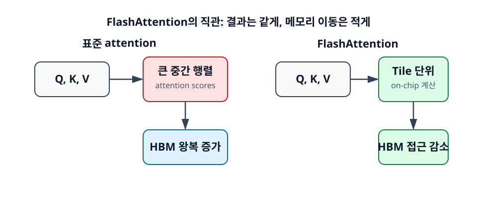
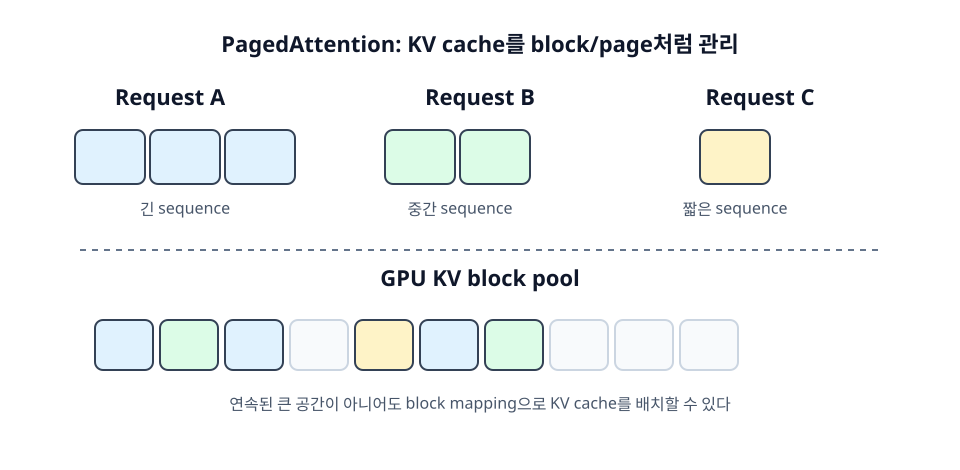

6장. Attention 최적화 입문¶
Attention은 Transformer의 핵심이지만, 긴 sequence에서는 비용이 크게 증가한다. LLM 추론 엔진이 단순히 모델을 실행하는 wrapper가 아니라 별도의 시스템으로 발전한 이유 중 하나도 attention과 KV cache를 효율적으로 다뤄야 하기 때문이다.
이 장에서는 FlashAttention과 PagedAttention을 입문자 관점에서 다룬다. 두 기술은 서로 다른 문제를 겨냥한다. FlashAttention은 attention 계산 중 메모리 이동을 줄이는 데 초점이 있고, PagedAttention은 serving 환경에서 KV cache 메모리를 효율적으로 관리하는 데 초점이 있다.
학습 목표¶
- 긴 sequence에서 attention이 비싸지는 이유를 이해한다.
- FlashAttention의 핵심 직관을 설명한다.
- PagedAttention이 serving에서 중요한 이유를 이해한다.
6.1 표준 attention의 문제¶
표준 attention을 단순하게 생각하면 Query와 Key의 유사도를 계산하고, 그 결과로 Value를 가중합한다. 문제는 sequence length가 길어질수록 attention score matrix가 커진다는 점이다. 입력 token이 많아지면 계산량뿐 아니라 중간 결과를 저장하고 읽는 메모리 접근도 커진다.
6.1.1 Attention은 긴 sequence에서 비싸다¶
Sequence length를 N이라고 하면, 모든 token이 서로를 참조하는 self-attention은 직관적으로 N x N 관계를 다룬다. 실제 구현에는 causal mask, head 수, 최적화가 있지만, 긴 sequence에서 attention이 빠르게 무거워진다는 감각은 유지된다.
짧은 채팅에서는 이 비용이 크게 보이지 않을 수 있다. 그러나 긴 문서 요약, 코드베이스 분석, 128K context 요청에서는 attention 비용과 KV cache 비용이 모두 중요해진다.
6.1.2 계산량만큼 메모리 접근도 중요하다¶
GPU 성능을 이야기할 때 FLOPS만 보는 경우가 많다. 하지만 attention에서는 중간 행렬을 메모리에 쓰고 다시 읽는 비용도 크다. GPU의 빠른 on-chip memory에 머무르지 못하고 HBM을 자주 왕복하면, 연산 장치가 충분히 빨라도 전체 속도는 메모리 이동에 막힐 수 있다.
이 관점은 입문자에게 특히 중요하다. "GPU utilization이 높지 않은데 왜 느리지?"라는 질문의 답이 연산량이 아니라 memory bandwidth나 memory layout에 있을 수 있기 때문이다.
6.1.3 GPU는 연산보다 데이터 이동에서 막히는 경우가 많다¶
현대 GPU는 큰 행렬 곱을 매우 빠르게 수행한다. 그러나 데이터를 적절한 위치에 가져오고, 중간 결과를 저장하고, 다시 읽는 과정이 비효율적이면 연산 성능을 충분히 활용하지 못한다. LLM 추론 최적화는 연산을 줄이는 일뿐 아니라 데이터 이동을 줄이는 일이기도 하다.
6.2 FlashAttention의 직관¶
FlashAttention은 attention의 수학적 결과를 바꾸지 않으면서 GPU 메모리 접근을 줄이는 기법이다. 핵심은 큰 attention matrix를 통째로 메모리에 materialize하지 않고, 작은 tile 단위로 계산해 on-chip memory를 더 잘 활용하는 것이다.

6.2.1 Attention 결과는 같게 유지한다¶
FlashAttention은 approximate attention이 아니다. 결과를 대충 근사해서 빠르게 만드는 방식이 아니라, 같은 attention 결과를 더 메모리 효율적인 방식으로 계산한다. 입문자는 이 점을 먼저 기억하면 된다.
물론 실제 구현에서는 precision, kernel, hardware에 따라 세부 차이가 있을 수 있지만, 개념적으로는 "결과는 유지하고 IO를 줄인다"가 핵심이다.
6.2.2 GPU 메모리 접근을 줄인다¶
표준 구현에서는 큰 중간 행렬을 만들고 저장한 뒤 다시 읽는 과정이 발생할 수 있다. FlashAttention은 tile 단위로 softmax와 value 가중합을 진행해 HBM 접근을 줄인다. 즉, GPU 안에서 더 가까운 메모리를 활용하고 불필요한 왕복을 줄인다.
개발자 관점에서는 FlashAttention을 직접 구현하기보다, 사용하는 inference engine이나 framework가 어떤 attention backend를 사용하는지 확인하는 일이 더 현실적이다.
6.2.3 긴 sequence에서 효과가 커진다¶
Sequence가 짧을 때는 attention 중간 행렬도 작다. 최적화의 효과가 제한적일 수 있다. 반면 sequence가 길어질수록 중간 데이터와 메모리 접근이 커지므로 FlashAttention의 효과가 중요해진다.
Long-context 모델이 실용화되는 과정에서 FlashAttention 계열 최적화가 중요한 이유가 여기에 있다. 단순히 모델이 긴 context를 학습했다고 해서 serving이 자동으로 효율적이 되는 것은 아니다.
6.3 PagedAttention의 직관¶
PagedAttention은 vLLM으로 널리 알려진 KV cache 관리 방식이다. 이름에서 알 수 있듯이 운영체제의 virtual memory paging과 비슷한 직관을 사용한다. 요청별 KV cache를 큰 연속 공간으로만 관리하지 않고, block/page 단위로 나누어 관리한다.

6.3.1 KV cache를 page/block처럼 관리한다¶
LLM serving에서는 요청마다 sequence length가 다르다. 어떤 요청은 짧은 질문이고, 어떤 요청은 긴 문서 요약이다. 모든 요청에 최대 길이만큼 연속된 KV cache 공간을 미리 잡아 두면 낭비가 크다.
PagedAttention은 KV cache를 고정 크기 block으로 나누고, sequence가 실제로 필요한 만큼 block을 할당한다. 논리적인 token 위치와 물리적인 block 위치를 mapping해 관리한다.
6.3.2 메모리 낭비를 줄인다¶
요청마다 길이가 다를 때 block 단위 관리는 메모리 낭비를 줄인다. 긴 sequence는 여러 block을 사용하고, 짧은 sequence는 적은 block만 사용한다. 요청이 끝나면 block을 반환해 다른 요청이 사용할 수 있다.
이 방식은 특히 continuous batching과 잘 맞는다. 실행 중인 batch 안에서 요청이 들어오고 나가며 sequence 길이가 계속 변하기 때문이다.
6.3.3 여러 요청의 KV cache를 효율적으로 관리한다¶
Serving 시스템에서 중요한 것은 단일 요청의 속도만이 아니다. 여러 요청이 동시에 들어올 때 GPU 메모리를 얼마나 효율적으로 쓰는지가 throughput과 안정성을 좌우한다. PagedAttention은 이 문제를 KV cache block 관리로 풀어낸다.
개발자 입장에서는 PagedAttention의 내부 구현을 모두 알 필요는 없다. 하지만 vLLM 같은 엔진이 왜 단순한 Hugging Face generate loop보다 serving에 강한지 이해하려면 이 개념을 알아야 한다.
정리¶
Attention 최적화는 LLM 추론 성능의 핵심이다. FlashAttention은 attention 계산의 메모리 이동을 줄이고, PagedAttention은 KV cache를 block 단위로 관리해 serving 환경의 메모리 낭비를 줄인다.
둘 다 "GPU가 해야 할 일을 효율적으로 배치한다"는 공통점이 있다. LLM 추론 성능은 모델 크기만으로 결정되지 않고, attention과 KV cache를 어떻게 다루는지에 크게 좌우된다.
점검 질문¶
- FlashAttention은 모델의 답을 바꾸는 최적화인가?
- PagedAttention은 왜 단일 요청보다 serving 환경에서 더 중요해지는가?
다음 장으로¶
다음 장에서는 logits, sampling, temperature, top-p 같은 출력 제어 개념을 다룬다. 이것은 모델 품질뿐 아니라 structured output과 serving 비용에도 영향을 준다.